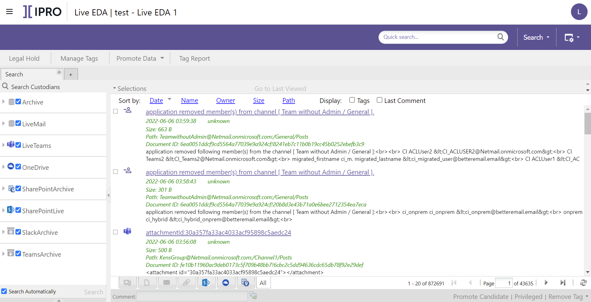

Overview: LIVE EDA
An (Early Data Assessment) case lets you perform searches on live content across multiple repositories prior to collection. Data from the selected live locations and custodians is made available in the same, single-pane search engine, . users can collaborate in the same case to perform searches. The scope of each search can be set as desired and all search results can be previewed, tagged, and commented on.
This effective and collaborative process allows you to reduce the data set, so only the relevant data is promoted to the connected Review case.

About LIVE EDA Cases
A case allows you to assess live data, residing in multiple and various live locations, by searching it in-place, from the interface. This eliminates any risk associated with keeping multiple copies of the data. Centralizing and simplifying the data collection process improves responsive rates and response times while reducing the total overhead and number of departments involved. By enabling effective collaboration in the same case, the assessment of the live data can be streamlined and requirements for outside Counsel reduced.
You can reduce the risk of exposing personal or sensitive data and breaching compliance regulations by automating Classification of PCI, PHI, and PII. You can also create a case dedicated to Legal Hold to ensure preservation of the case data.
An case can connect to previously configured live locations and their associated custodians. By including the live locations in the case, all data in the live data source can be accessed. The selection of custodians defines the specific user data included in the case. The items/documents then become available in the interface, where they can be searched according to the desired scope. For instance, you can enter specific keywords in Quick Searches, build complex search queries in Advanced Search, or perform specific data type searches, for example, an Instant Messages search.
A Case Administrator can enable Case Scope to ensure that only the search results are visible and available to those working in the case.
You can preview each search result and also apply tags and comments to selected item(s) or document(s). When you are satisfied with the search, you can promote all or selected results to the Review case.
You can create an case to place case data on Legal Hold. When Legal Hold is applied to the case, the case content cannot be deleted by anybody. It is a best practice to create a case dedicated specifically to the Legal Hold. For more information, see Work in LIVE EDA Case.
By viewing and investigating the data before sending it to Review, you can ensure that the promoted data set is relevant. This minimizes the total volume of data that is promoted, which reduces cost and allows for evidence to be found more quickly.
About Creating LIVE EDA Cases
To create a case, you must configure the integration of and services. Additionally, you must connect to the desired, external data sources and configure your Indexing and Archiving setup. After all configuration tasks have been completed, the connectors and associated custodians can be included in the case.
A case is created in the Case Management module. A case can be added to a new or existing Managing Client, Client, and Code Name, and can be created together with or independently of a Processing and a Review case. For more information, see Create LIVE EDA Case. A previously created case can be edited at any time. To learn more, see Edit LIVE EDA Case Settings.
A case is opened in the module in . In the interface, search results can be promoted to and the corresponding Review case.
Related Topics
Configure LIVE EDA
Create LIVE EDA Case
Work in LIVE EDA Case
Edit LIVE EDA Case Settings
Review LIVE EDA Case